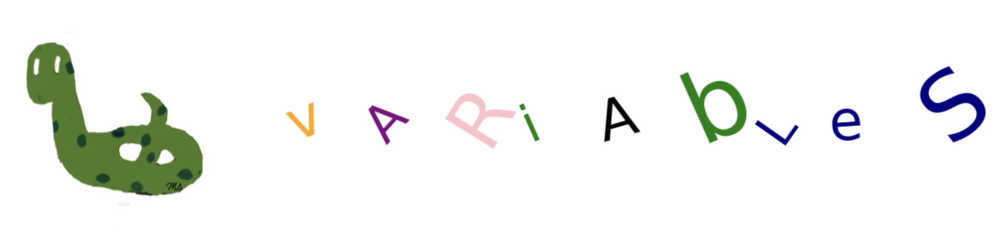

Chp-1: Variables#

Chapter Objectives
By the end of this chapter, the student should be able to:
Explain how variables are defined and used in Python to store information.
Declare and assign values to variables in Python.
Use common Python data types like integers, floats, strings, booleans.
Check the data type of a variable using Python
Apply Python’s naming rules when naming variables.
Perform reassigning different values to a variable.
Perform string operations such as concatenation and repetition.
Definition#
A variable is a name that refers to a value, such as a number (e.g., 25) or a name (e.g., ‘Michael’).
It functions like a container for storing data values.
Variables allow you to store and manipulate data in your programs.
To create a variable:
Choose a name.
Assign a value to it using the
=operator.
Example:
age = 25The variable’s name is age.
The value of the age variable is 25.
Purpose#
Why do we need variables?
For the code below:
print(40)
print(40+1)
print(40**2)
print(40*7)
print(40-13)
How many changes do you need to make to get a similar output for 20 instead of 40?
Answer: 5
print(20) # 1st change
print(20+1) # 2nd change
print(20**2) # 3rd change
print(20*7) # 4th change
print(20-13) # 5th change
In a lengthy program, you might need to make numerous changes, which can be time-consuming.
There is a risk of forgetting to update some of them, leading to errors or incorrect output.
Let’s now write the same code, but this time using the variable number.
number = 40
print(number)
print(number+1)
print(number**2)
print(number*7)
print(number-13)
If you use the variable
number, then to obtain the output for 20, you only need to make one change, as follows:
number = 20 # 1st change
print(number)
print(number+1)
print(number**2)
print(number*7)
print(number-13)
id()#
The id() function is a built-in function that returns the memory location of a variable.
It can also be considered as the ID number of the variable.
age = 25
print(id(age))
4312837992
state = 'Florida'
print(id(state))
4368880816
Values and Types#
In Python, the most commonly used basic data types are integers, floats, strings, and booleans.
Integers
These are numbers without a decimal point, such as \(-3, -2, -1, 0, 1, 2, 3, \dots\)
Their class is called int.
Examples: 5, 9, 123.
Floats
These are decimal numbers, including those with a decimal point, such as 4.0.
Their class is called float.
Examples: \(4.89, 67.98, 5.0\)
Strings
These are ordered sequences of characters.
They are enclosed in quotes.
Their class is called str.
Examples: ‘USA’, ‘Michael’, ‘3’, ‘5.67’, ‘True’
Booleans
There are only two boolean values:
TrueandFalse.They represent the truth values of boolean expressions.
They are keywords in Python and cannot be used as variable names.
Their class is called bool.
The boolean
Trueand the string'True'are different.The boolean
Falseand the string'False'are different.
In Python, there’s no need to explicitly specify the type of a variable.
The type is determined automatically based on the assigned value.
type()#
The type() function is a built-in function that returns the data type of a variable or value.
# type of 2
print(type(2))
<class 'int'>
# type of 2.97
print(type(2.97))
<class 'float'>
# type of 2.0
print(type(2.0))
<class 'float'>
# type of 'Florida'
print(type('Florida'))
<class 'str'>
# type of boolean True
print(type(True))
<class 'bool'>
# type of boolean False
print(type(False))
<class 'bool'>
# type of string 'True'
print(type('True'))
<class 'str'>
# type of string '2'
print(type('2'))
<class 'str'>
Warning:
2is an integer, making it a number'2'is a string; it represents the character 2 and is not considered a number.
Variable names#
Variable names can contain lowercase and uppercase characters, digits, and underscores with the following properties:
Variable names are case-sensitive.
A variable name cannot start with a digit.
The underscore character
_can be used in a name as a substitute for a space.Variable names cannot be any of the keywords (reserved words) listed below:
# keywords in Python
help('keywords')
Here is a list of the Python keywords. Enter any keyword to get more help.
False class from or
None continue global pass
True def if raise
and del import return
as elif in try
assert else is while
async except lambda with
await finally nonlocal yield
break for not
# case sensitive
name = 'Jim'
Name = 'Joe'
The value of the
Namevariable is different from that of thenamevariable.
print(name)
Jim
print(Name)
Joe
# ERROR: 5x is not a valid variable name
5x=9
# ERROR: keyword error
False = 5
# ERROR: symbol error
@fun=4
Remark: Function names can be used as a variable name but function properties will be lost.
Therefore, it is not recommended to use the function names as variable names
sum = 6
sum([7,8]) # ERROR: sum can not do addition
In the first line of the code above, sum becomes a variable and its value is 6.
In the second line, sum is attempted to be used as a function, but it is no longer a function, resulting in an error message.
Reassignment#
The value of a variable can be changed by assigning it a new value.
age = 50
print(age)
age = 25 # The value of the age variable has been changed.
print(age)
age = 'ten' # The type can also be changed.
print(age)
50
25
ten
Multiple assignment#
Multiple variables can be created in a single line.
# a=1, b=10, c=100
a, b, c = 1, 10, 100
print(a)
print(b)
print(c)
1
10
100
In the following statement, the value 7 is assigned to both variables x and y.
It’s a shorthand way of assigning the same value to multiple variables in a single line.
x = y = 7
print(x)
print(y)
7
7
Print variables and constants#
Variable values and constant strings can be displayed using a single print() function. There are several ways to do this.
One way is to separate variables and constant strings with commas.
By default, there will be a space in the output between each comma-separated item.
name, age = 'Michael', 25
print('My name is', name)
My name is Michael
print('I am', age, 'years old.')
I am 25 years old.
print('My name is', name, '.I am', age, 'years old.')
My name is Michael .I am 25 years old.
You can do algebraic operations in the print function
print(2024-age)
1999
Changing the type of a variable#
int(): converts appropriate floats and strings into integers
float(): converts appropriate integers and strings into floats
str(): converts appropriate integers and floats into strings
# float to int
print(int(3.45))
3
# float to int
print(int(-3.2))
-3
# str to int
print(int('3'))
3
# ERROR: string '3.59' to int
print(int('3.59'))
# int to float
print(float(1))
1.0
# str to float
print(float('3.5'))
3.5
# int to str
print(str(1))
1
# float to str
print(str(3.5))
3.5
age = 25
print('I am '+str(age)+' years old.')
I am 25 years old.
String Operations#
Concatenation#
Combining or joining two or more strings into a single string by using the
+operator
first_name = 'Michael'
last_name ='Jordan'
age = 25
In this example, the
+operator concatenates (joins) the value offirst_nameandlast_namevariables to create a new string stored in the variablename.
name = first_name + last_name
print(name)
MichaelJordan
Use the string
' '(one space) to add a space between the first and last names.
name = first_name + ' ' + last_name
print(name)
Michael Jordan
constant string + variable
print('My name is ' + name)
My name is Michael Jordan
To perform concatenation, conversion should be done in the following code.
print('I am ' + str(age) + ' years old.')
I am 25 years old.
+can not be used between numbers and strings
name, age = 'Michael', 25
# ERROR: str + int
print(name+age)
Repetition#
Repeating a string using the
*operator.It takes the form of
integer*stringorstring*integer.String repetition cannot be performed using floats, even with 4.0
In this example, the * operator repeats the string ‘U’ four times.
print('U'*4)
UUUU
In this example, the * operator repeats the string ‘Joe’ five times.
print('Joe'*5)
JoeJoeJoeJoeJoe
Since 4.0 is not an integer, you will get an error message in the following code.
# ERROR: 4.0 must be 4
print('U'*4.0)
The following is a triangle constructed using the $ character.
print('$') # one $ sign
print('$'*2) # two $ signs
print('$'*3) # three $ signs
print('$'*4) # four $ signs
print('$'*5) # five $ signs
$
$$
$$$
$$$$
$$$$$
The following is a triangle constructed using the space and $ characters.
# triangle by using the space and $ characters
print(' '*4 + '$') # four spaces and one $ sign
print(' '*3 +'$'*2) # three spaces and two $ signs
print(' '*2 +'$'*3) # two spaces and three $ signs
print(' '*1 +'$'*4) # one space and four $ signs
print('$'*5) # five $ signs
$
$$
$$$
$$$$
$$$$$